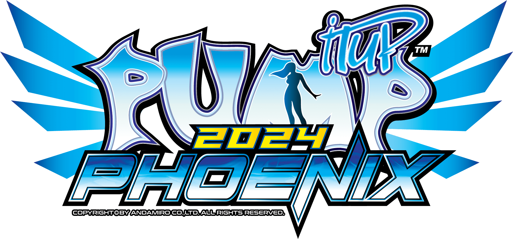
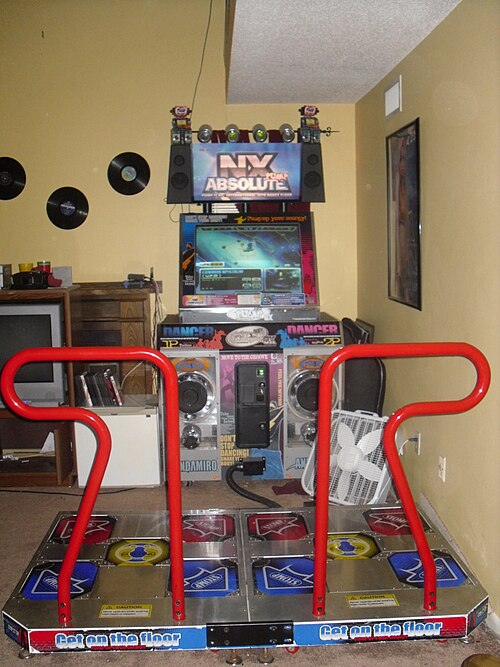
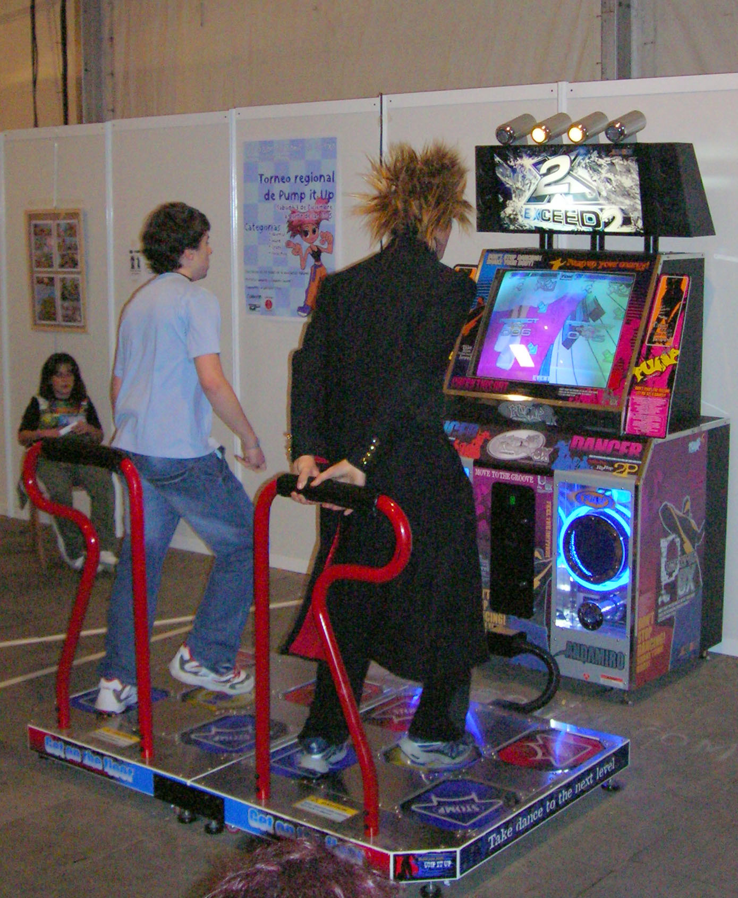
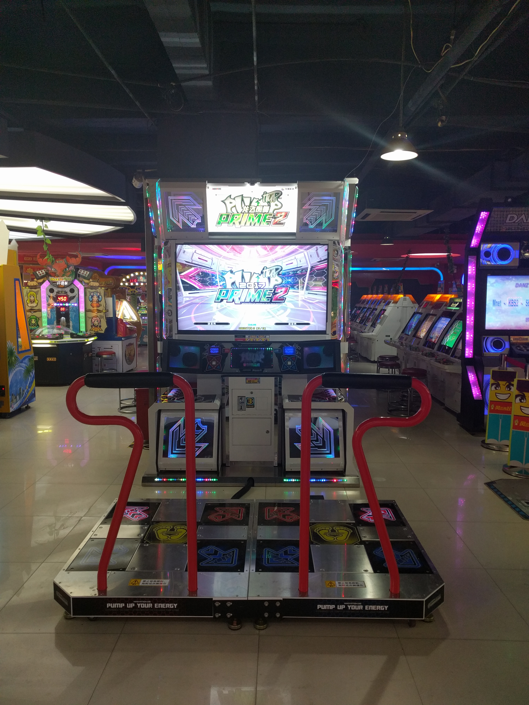
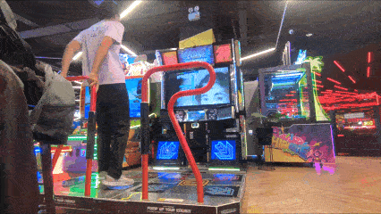
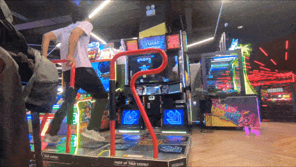
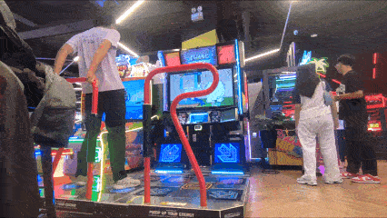
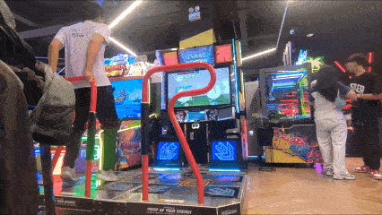

Source: Andamiro Official Website
By Mr. Nate

Source: Funbox
Pump It Up is a music video game series developed and published by Andamiro, a South Korean arcade game producer. The game is commonly viewed as a Korean-developed counterpart to Konami's Dance Dance Revolution series, similar to the way EZ2DJ emerged as a domestic alternative to beatmania.
The game is similar to Dance Dance Revolution, except that it has five arrow panels as opposed to four, and is typically or mostly played on a dance pad with five arrow panels: the bottom-left, top-left, a center, top-right, and a bottom-right. Additional gameplay modes may utilize two five-panel pads side by side. These panels are pressed using the player's feet, in response to arrows that appear on the screen in front of the player. The arrows are synchronized to the general rhythm or beat of a chosen song, and success is dependent on the player's ability to time and position their steps accordingly.
The original version of the game was originally released in South Korea on 20 September 1999. The series has also expanded internationally to other markets, primarily in North America, South America, and Europe. It had slightly expanded into parts of Oceania as well.
Pump It Up 2024 Phoenix is the latest version of the series, having been announced on May 16, 2024. The update was available free of charge for Pump It Up 2023 Phoenix machines starting on May 27, 2024. Pump It Up 2024 Phoenix uses dark and light blue as its predominant colours.
Historically, Pump It Up has tried to cater to freestyle players in addition to "technical" players by including freestyle-friendly charts, and as a result, the game has a culture in the freestyle and breakdancing disciplines. However, in recent versions the game has shifted to focus more heavily on "technical" players, expanding the vast array of high-difficulty songs, step charts, and title-based achievements.
The first game was known simply as Pump It Up (PIU), and it was released to South Korean arcades in September 1999. It includes 15 songs, and it is retroactively known as Pump 1st in subsequent PIU releases. A sequel, Pump It Up: The 2nd Dance Floor, was released on 27 December 1999. It adds 23 new songs while removing "Hatred" by Novasonic from the first game. A home version known as Pump It Up The Fusion: The 1st N' 2nd Dance Floor was released at the end of 1999 for Microsoft Windows computers.
Konami filed a lawsuit in Seoul, South Korea against Andamiro in 2000, claiming that Pump It Up infringed upon their design right for Dance Dance Revolution. The court found in Konami's favor, but Andamiro appealed. At the same time, Andamiro sued Konami in the state of California, claiming that DDR violated their patent for Pump It Up. Both suits were ultimately settled out of court, and the details were never publicly released.
Pump It Up The O.B.G: The 3rd Dance Floor was released on 7 May 2000 in South Korea. The name O.B.G is an acronym for Oldies But Goodies. A home version for Windows computers was also released later in 2000, while an expansion to O.B.G known as The Season Evolution Dance Floor was released in September 2000. Aside from one exception, future releases did not follow this numbering pattern, beginning with Pump It Up: The Collection on 14 November 2000, followed by an expansion titled The Perfect Collection in December 2000, and Pump It Up Extra in January 2001.

Source: Javier Mediavilla Ezquibela

Source: Qa003qa003
Pump It Up 2015 Prime was released in December 2014 in arcades. It is the first game in the series to run in 720p high definition on supported cabinets, although older cabinets ran the game at 480p standard resolution instead. A sequel, Pump It Up 2017 Prime 2, was released in November 2016, while a 2018 update features future improvements. Prime 2 and the 2018 update are the final versions to support standard definition SD, SX, DX and GX cabinets.
Pump It Up XX 20th Anniversary Edition was released on 7 January 2019, to celebrate 20 years of the Pump It Up series. This version runs exclusively on cabinets with 720p high definition support. It was the longest running Pump It Up game of the decade at that time. Two months later, the servers of Prime 2 were shut down on 28 March 2019.
Pump It Up 2023 Phoenix was announced on May 10, 2023. This instalment is themed after the phoenix from ancient mythology, and the game's interface uses orange as its predominant colour, with yellow used as a secondary colour. The game was released to South Korean arcades on July 4, 2023, and internationally in August 2023. Phoenix has received minor updates since its launch, with the latest consisting of version 1.08. Online support for Pump It Up XX was discontinued on December 11, 2023.
Pump It Up 2024 Phoenix was announced on May 16, 2024. This update will be available free of charge for 2023 Phoenix machines on May 27, 2024. This update's interface uses dark and light blue as its predominant colours. Pump It Up 2026 Phoenix 2 was announced to be released on May 2026 through Phoenix's Extra Content Update Teaser on December 18, 2025.[5]




Source: Me!